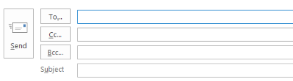
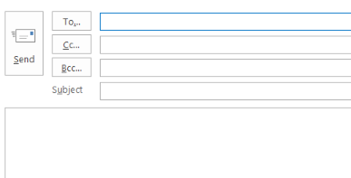
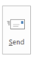

# Click on Start Button click() # Sleep for 1 Sec - to match delay - adjust this as needed wait(1) type("outlook") #below exists screen - kept as manual gate #if below screen exists on screen, then only next step (click new mail) #will be handy, if outlook opens slow on some of the machines # Press Enter key to open outlook type(Key.ENTER) wait(1) #App.focus('Outlook') - need proper syntax #New mail via clicking button #click("1553178120664.png") # New mail via short cut key type("n",KEY_CTRL) wait(1) click(Pattern().targetOffset(-72,-31)) type("py266t@att.com") click(Pattern().targetOffset(-61,5)) type("Test Mail to Purna.Yeluri") click(Pattern().targetOffset(0,-7)) # Other Use Cases # Like Open Portal, Download a file, Ex: excel file, Sort, Select few rows, Create Graph, Copy, Open Outlook, New mail - send mail #References # https://sikulix-2014.readthedocs.io/en/latest/index.html # https://answers.launchpad.net/sikuli # https://www.youtube.com/watch?v=rrVHoYBknGo